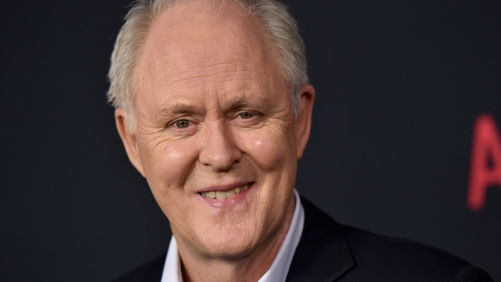
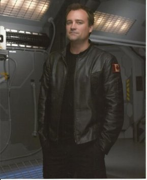

Rise of the Planet of the Apes (titulada El origen del planeta de los simios en España y El planeta de los simios: (R)Evolución en Hispanoamérica) es una película estadounidense de ciencia ficción y acción dirigida por Rupert Wyatt, la séptima de la franquicia El planeta de los simios. Fue estrenada en los cines de Estados Unidos el 5 de agosto de 2011. De acuerdo con Fox, artísticamente es una nueva versión de la historia y no tiene relación con la saga El planeta de los simios (1968-1973) ni con la versión de Tim Burton estrenada en 2001, sino que es un reboot de la franquicia. La película ha recibido reseñas generalmente positivas, en Rotten Tomatoes cuenta con una aprobación de 81%.
Will Rodman, un científico de San Francisco, está experimentando con una droga con la que espera curar la enfermedad de Alzheimer que sufre su padre. Después de que su trabajo presenta una falla, Will se convierte en el protector de un chimpancé que estuvo expuesto a la droga. Caesar desarrolla una inteligencia inusual, y Will decide continuar con sus experimentos. Pero al crecer la inteligencia y habilidades de Caesar, él se convierte en una amenaza para los humanos en la Tierra.
| Titulo | El origen del planeta de los simios (España)
El planeta de los simios: (R)Evolución (Hispanoamérica)" |
| Genero | Ciencia Ficcion |
| Director | Rupert Wyatt |
| Guion | Rick Jaffa y Amanda Silver; inspirado en la novela“El planeta de los simios”, de Pierre Boulle. |
| Tematica | Animales,Mutación,Muerte,Experimentos,Virus,Violencia,Venganza |
| Pais | Estados Unidos |
| Duracion | 107 minutos |
| Estreno | El 5 Agosto 2011 |
| Produccion | Peter Chernin, DylanClark, Rick Jaffa y Amanda Silver |
| Produccion General | Twentieth Century Fox Film Corporation / Chernin Entertainment |
| Musica | PatrickDoyle. |
| Fotografia | Andrew Lesnie |
| Distribuidora | Hispano Foxfilm |
| Reparto | James Franco (Will Rodman), Freida Pinto (Caroline Aranha), Brian Cox (John Landon), Tom Felton (Dodge Landon), Andy Serkis (César), John Lithgow (Charles Rodman), David Hewlett (Hunsiker), David Oyelowo (Steven Jacobs), Tyler Labine (Robert Franklin), Jamie Harris(Rodney) |
James Franco |
Freida Pinto |
 Jhon Lithgow |
Brian Cox |
Tom Felton |
Andi Serkis |
 David Hewlett |
Tyler Labine |
Los grandes simios están desapareciendo de una forma veloz y precipitada por la pérdida de su hábitat, la caza furtiva, el aceleramiento del cambio climático, ocasionado por nuestras sociedades industrializadas, por la corrupción sin medida de muchos gobiernos y por el olvido completo de que los grandes simios son también homínidos que tienen derecho a seguir evolucionando, a seguir existiendo, a tener sus derechos básicos y a vivir en sus ecosistemas tropicales junto a otras especies que también tienen ese derecho, como el nuestro, a la vida y a evolucionar.
Pero nuestra arrogancia no permite proteger nada que sea vivo y los políticos de todos los países son responsables directos de lo que está ocurriendo no sólo con el cambio climático sino con la extinción masiva de especies y la destrucción de la biodiversidad planetaria.
Sin embargo, el cine, con esta nueva película en la que muchos jóvenes solo verán a unos chimpancés violentos que quieren aniquilar a los humanos, presenta nuevamente a una especie diferente a la nuestra, a unos grandes simios violentos que se alzan en guerra con nuestra sociedad y a los que hay que exterminar sea como sea, independientemente de que después existan argumentos emotivos y momentos de empatía con el opresor.
Cada año en los Estados Unidos más de 125,000 primates son confinados en laboratorios donde sufren de maltrato para después ser asesinados en experimentos invasivos, dolorosos y aterradores. Es bien sabido que los primates son seres sensibles e inteligentes que comparten muchas características importantes tanto biológicas como psicológicas con los humanos, son estos mismos atributos, desafortunadamente, los que los convierten en blancos perfectos para los científicos que los tratan como si fueran piezas desechables de equipo de laboratorio. Los Estados Unidos tienen la deshonrosa distinción de ser el único país en el mundo, además de Gabón, que continúa realizando experimentos invasivos en chimpancés.
Visite los siguientes enlaces si desea enterarse sobre noticias al dia de la experimentacion con animales
-Son los animales conscientes de su sufrimiento?
-Experimentaion con Perros y Gatos
-Nuevo Metodo de Experimentacion con Animales
-Volkswagen se diculpa por Experimentacion con Monos
Hoy en dia le experimentacion con animales ha incrementado bastante ,a raiz de que se quiere descubrir la cura para diferentes enfermedades. No solo primates sino tambien perros,vacas,gatos,gallinas estan siendo sometidas a diferentes experimentos. en especial los primates son quienes sufren las consecuencias porque tiene cierta semejanza con el cuerpo humano y es asi que es mas factible experimentar en ellos diferentes medicamentos. Los pobres animales son sacados de sus habitats y son sometidos a torturas hasta su muerte,no tomamos en cuenta que estos animales de tanto medicamento podrian evolucionar a tal punto de volverse contra la humanidad como lo vemos en la pelicula. Demos un alto a tanta tortura contra los animales!!! El hombre no mide las cosecuencias de sus actos no solo atenta contra la fauna sino tambien contra la flora.Debemos tomar conciencia que nuestro planeta esta sufriendo y poco a poco lo estamos destruyendo.BASTA!!!